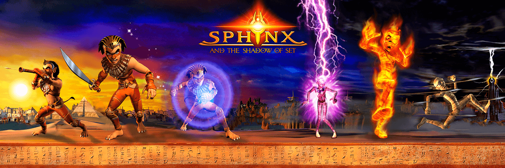

The first PC mod for Sphinx and the Cursed Mummy where you can play the removed content of the game. Restoring the original storyline with the lost worlds of Akaria and Sakkara, and adding playable versions of the beta levels for Abydos, Heliopolis and Uruk. The mod includes:
The mod gives you the option to start the game again, or only at the moment to explore the new regions. The region of Akaria, takes place in an underwater city, ruled by King Sobek. It is a city that is at war with Abydos provoked by the King's secretary (Ishka).
The story of Sakkara takes place in a jungle, that was attacked by the Gebs who belong to the Geb Queen’s army. There are two villages in this region, one of which is the Hittites (the army of the region) and another of the peasants, whose village was left in ruins after the attack and had to be moved to a cave.
I hope you enjoy this new adventure of Sphinx!
